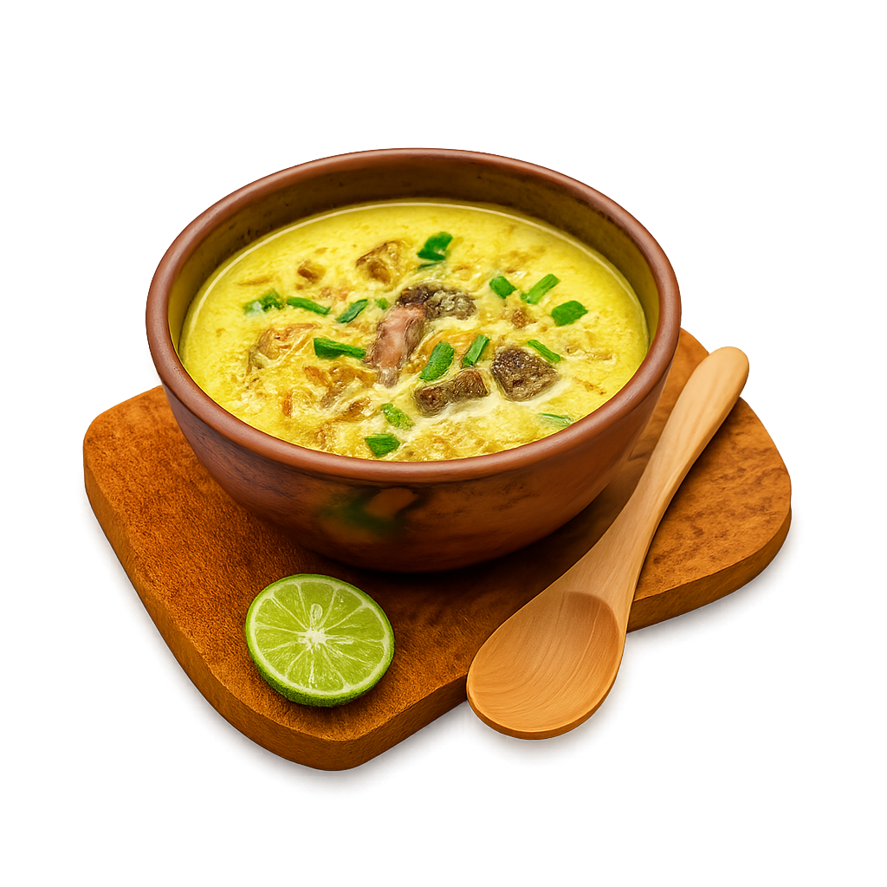

DETAIL
Empal Gentong
Empal Gentong adalah gulai khas Cirebon yang berbahan dasar daging sapi, biasanya bagian usus, babat, atau daging sengkel. Kuahnya dimasak dengan rempah-rempah pilihan, santan, dan disajikan hangat dalam gentong tanah liat, memberikan aroma sedap yang khas. Empal Gentong umumnya disantap dengan nasi putih atau lontong, dilengkapi taburan bawang goreng dan daun kucai segar. Hidangan ini cocok dinikmati kapan saja bersama keluarga.
Resep Empal Gentong Khas Cirebon
Bahan Utama:
- 500 gram daging sapi sengkel (bisa campur jeroan sesuai selera)
- 1 liter santan encer
- 2 batang serai, memarkan
- 2 lembar daun salam
- 2 lembar daun jeruk
- 1 ruas lengkuas, memarkan
- Garam secukupnya
- Minyak untuk menumis
Bumbu Halus:
- 6 siung bawang merah
- 4 siung bawang putih
- 2 butir kemiri, sangrai
- 1 ruas kunyit, bakar
- 1 ruas jahe
- ½ sdt ketumbar
Pelengkap:
- Daun kucai iris
- Sambal cabai rawit rebus
- Nasi putih hangat atau lontong
Cara Membuat:
- Rebus Daging: Rebus daging hingga empuk, angkat lalu potong-potong. Sisihkan kaldunya.
- Tumis Bumbu: Panaskan minyak, tumis bumbu halus, serai, daun salam, daun jeruk, dan lengkuas hingga harum.
- Didihkan: Masukkan bumbu tumis ke dalam kaldu rebusan daging. Tambahkan santan, aduk perlahan agar santan tidak pecah.
- Masak Daging: Masukkan potongan daging ke kuah. Didihkan perlahan hingga bumbu meresap. Koreksi rasa.
- Sajikan: Hidangkan Empal Gentong panas-panas, taburi daun kucai, sambal rawit rebus, dan nasi atau lontong.
Tips:
Empal Gentong tradisional dimasak dalam gentong tanah liat dengan kayu bakar agar aroma lebih sedap. Jika tidak ada, panci biasa juga oke!
Ulasan & Komentar
Anonymous:
Enak banget! Resepnya mantap, mirip aslinya!